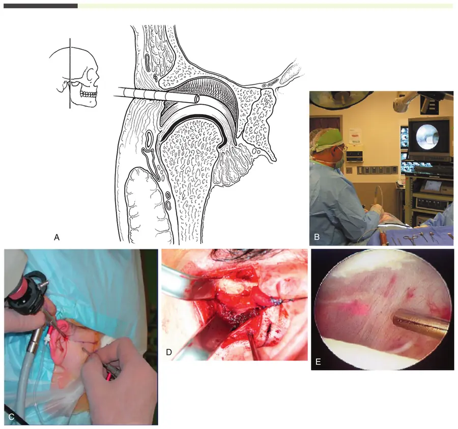
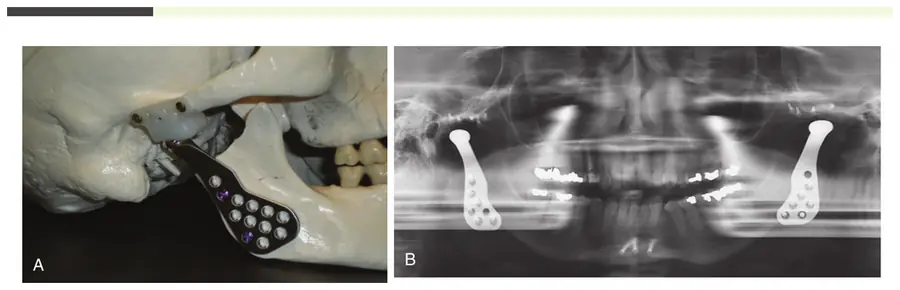

نسخه استخراجشده؛ ترجمه یا تأیید علمی انجام نشده است. وضعیت: captured
تعریف: آرتروسنتز تکنیکی کمتهاجمی است که شامل قرار دادن پورتها — سوزن یا کانولاهای کوچک — درون TMJ برای شستوشوی مفصل و شکستن چسبندگیهای ظریف است.

و بیحسیاش: بیشتر بیماران با سداسیون وریدی و بلاک عصب اوریکولوتمپورال آرتروسنتز میشوند.
و تکنیک رایج — گام به گام:
و پس از عمل: ناراحتی با مسکنهای خفیف یا NSAID اداره میشود، و نوعی برنامهی ورزشی یا فیزیوتراپی در دورهی بهبود انجام میگیرد.
و شایعترین کاربردش: بهنظر میرسد در بیماران با جابهجایی قدامی دیسک بدون جااندازی باشد.
و کاراییاش: درمان مؤثر بهنظر میرسد، با نتایجی مشابه یا بهتر از سایر انواع اعمال آرتروسکوپیک و جراحی باز. و در بیماران با قفل بستهی پایدار و شدید، آرتروسنتز باز شدن انسیزال را بهطور معنادار بیشتر و درد را کمتر میکند.
و حالا چرا کار میکند؟ — چهار توضیح احتمالی:
آرتروسکوپی — و آنچه ممکن میسازد: پس از ورود به فضای مفصلی فوقانی، آرتروسکوپ گذاشته میشود تا دید مستقیم همهی جنبههای حفرهی گلنوئید، فضای مفصلی فوقانی، و سطح فوقانی دیسک را ممکن سازد.

و سودش: ارزیابی آرتروسکوپیک، جراح را قادر به دیدن مفصل میکند و بنابراین به تشخیص وضعیت پاتولوژیک داخلی مفصل کمک مینماید؛ لیز چسبندگیها و شستوشوی مفصل هم انجام میشوند.
و تکنیکهای پیشرفتهتر: معمولاً شامل قرار دادن دستکم دو کانولا در فضای مفصلی فوقانیاند؛ یکی برای دیدن با آرتروسکوپ، و ابزارها از راه دیگری وارد میشوند.
و ابزارهایی که از کانولای کاری وارد میشوند: فورسپس، قیچی، نخ بخیه، سوزن دارو، پروب کوتر، و ابزارهای موتوردار مانند فرز و شیور؛ و فیبرهای لیزر هم میتوانند برای حذف چسبندگی و بافت ملتهب و برش بافت درون مفصل به کار روند.
و یک یافتهی مهم و متناقضنما: هرچند بهنظر میرسد تلاشها برای جاگذاری مجدد دیسکهای جابهجاشده به بازگرداندن آناتومیک موقعیت طبیعی دیسک نمیانجامند، بیمارانی که این نوع درمان را دریافت میکنند بهنظر میرسد پس از جراحی آرتروسکوپیک بهبود بالینی معناداری دارند.
یعنی: موفقیت بالینی، لزوماً به بازگرداندن آناتومی وابسته نیست.
و کارایی آرتروسکوپی: بهنظر میرسد مشابه اعمال باز مفصل باشد، با مزیت موربیدیتی جراحی کمتر و عوارض کمتر و خفیفتر.
و جراحی جاگذاری دیسک: اعمال باز مفصل عموماً برای افرادی نگه داشته میشوند که به سایر اقدامات پاسخ مساعد ندادهاند؛ و کاوش جراحی باز TMJ بهطور سنتی پس از به حداکثر رساندن تکنیکهای محافظهکارانه پیش میرود. و نتیجهاش: عموماً مطلوب است و بیشتر بیماران درد کمتر و عملکرد بهتری دارند، ولی همه بهتر نمیشوند: ۱۰ تا ۱۵ درصد بیماران بهبودی نمیبینند یا بدتر میشوند.
و برداشتن دیسک: در برخی موارد دیسک چنان شدید آسیب دیده که باقیماندههای بافت دیسک باید برداشته شوند. و یک نکتهی تاریخی: دیسککتومی بدون جایگزینی، یکی از نخستین اعمال جراحی توصیفشده برای درمان اختلالات داخلی شدید TMJ بود.
و امروز: با فناوری کنونی، دیسککتومی میتواند از راه تکنیکهای آرتروسکوپیک انجام شود تا تشکیل بافت اسکار کمینه و روانسازی فراهمشده با سینوویوم حفظ گردد.
و نتایجش: هرچند این تکنیک بهطور گسترده به کار رفته، تنوع زیادی در نتایج بالینی بهنظر میرسد: برخی مفاصل تغییرات آناتومیک کمینه و بهبود بالینی معناداری نشان میدهند، و برخی مفاصل تغییرات دژنراتیو شدید با علائم پیوستهی درد و اختلال عملکرد.
و ترمیم یا وصله زدن دیسک: در شرایط پاتولوژیک پیشرفتهی مفصل، دیسک میتواند شدید آسیبدیده و سوراخ باشد ولی بافت باقیماندهی کافی داشته باشد تا عمل ترمیم یا وصله انجام شود.
و تکنیکهای پیوند اتوژن سهگانه: استفاده از درم، غضروف گوش، یا فاسیای تمپورالیس.
و کندیلوتومی اصلاحشده — یک عمل هوشمندانه: استئوتومی کامل میشود، ولی هیچ فیکساسیون سیمی یا پیچی گذاشته نمیشود، و بیمار برای دورهای از ۲ تا ۶ هفته در فیکساسیون بینفکی قرار میگیرد.
و نظریهی پشت این عمل: عضلات متصل به قطعهی پروگزیمال — یعنی قطعهی متصل به کندیل — کندیل را بهصورت منفعل جاگذاری خواهند کرد، که به رابطهی مساعدتری میان کندیل، دیسک، و حفره میانجامد.
یعنی: بهجای آنکه جراح دیسک را به کندیل برساند، کندیل را به دیسک میرساند — و کار را به عضلات میسپارد.